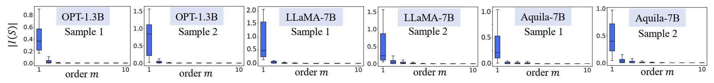

This study tries to answer the following question theoretically: can the inference logic of a DNN be
explained as symbolic primitives? Although the definition of primitives encoded by a DNN is still an open
problem, we follow our recent progress to mathematically formulate primitive patterns using interactions.
We have empirically observed the emergence of sparse interaction primitives in many DNNs trained for
various tasks, and we note that sparsity is an important characteristic of symbolic representations.
In this paper, we further identify three sufficient conditions for the emergence of sparse interaction
primitives and prove the sparsity of interactions under such conditions.
Fig.1: Illustration of interaction primitives.
A DNN does not treat each input variable (e.g., an image patch or a word) independently when conducting
inference, but usually encodes interactions between input variables. Given an input sample $\boldsymbol{x}$,
the network output $v(\boldsymbol{x})$ can be
decomposed into the sum of effects of all potential
interactions. (Note that we only consider AND interactions here. Please refer to
this paper
for a full definition of AND-OR interactions.)
$$
v(\boldsymbol{x})=v\left(\boldsymbol{x}_{\emptyset}\right)+\sum_{\emptyset \neq S \subseteq {N}} I (S | \boldsymbol{x}),
$$
where the interaction effect $I(S | \boldsymbol{x}) = \sum_{T \subseteq S}(-1)^{|S|-|T|} v\left(\boldsymbol{x}_{T}\right)$.
-
Complexity of an interaction $S$: defined as $|S|$ (also called the order of an interaction)
-
Interaction primitives: if $|I(S|\boldsymbol{x})|$ is large, we call it a salient
interaction primitive; otherwise, if $|I(S|\boldsymbol{x})|$ is close to zero, we call it
a noisy pattern.
-
Understanding interactions as AND relationships: only when patches in $S$ are all present
(not masked), the interaction makes a numerical effect $I(S|\boldsymbol{x})$ to the output;
otherwise, the numerical effect is removed.
Fig. 2: The sparsity of interaction primitives is observed on different DNNs trained on various datasets.
Sparsity of interaction primitives means that a DNN only encodes a few salient interactions on a specific
sample. Only a small number of interactions have significant effects (interactions primitives), while most
interactions are noisy patterns.
Assumption 1 (No extremely high-order interactions). Interactions higher than the $M$-th order have zero
effect:
$$
\forall S\in \{S \subseteq N: |S|\ge M+1\}, \quad I(S|\boldsymbol{x}) = 0.
$$
-
Assumption 1 implies that the DNN does not encode extremely complex interactions
-
Empirical evidence:

Assumption 2 (Monotonicity). The average network output is assumed to monotonically increase with
the size of the unmasked set $S$ of the input variables:
$$
\forall m' \le m, \ \bar{u}^{(m')} \le \bar{u}^{(m)}, \quad \bar{u}^{(m)} \overset{\text{def}}{=} \mathbb{E}_{|S|=m} [v(\boldsymbol{x}_S) - v(\boldsymbol{x}_\emptyset)]
$$
-
Assumption 2 implies the DNN yields higher classification confidence on average when the input sample is less masked/occluded
-
Empirical evidence:
Assumption 3 (Polynomial decrease of confidence). Given the average network output of samples with
$m$ unmasked input variables, $\bar{u}^{(m)}$ , we assume a lower bound for the average network output of
samples with $m' (m'\le m)$ unmasked input variables:
$$
\forall m' \le m, \bar{u}^{(m')} \ge \left( \frac{m'}{m} \right)^p \bar{u}^{(m)},
$$
where $p>0$ is a constant.
-
Assumption 3 implies the model's classification confidence does not significantly degrade on masked/occluded samples
-
Empirical evidence:
Let us define number of valid interaction primitives of $k$-th order as
$R^{(k)} \overset{\text{def}}{=} |{S\subseteq N : |S|=k, |I(S|\boldsymbol{x})|\ge \tau}|$.
We prove the following upper bound for $R^{(k)}$.
Conclusion: If positive interactions do not fully cancel with negative interactions
($|\eta^{(k)}|$ is not extremely small), then the number of valid interaction primitives is much less than
the total number of potential interaction $2^n$. This implies interaction primitives are sparse.